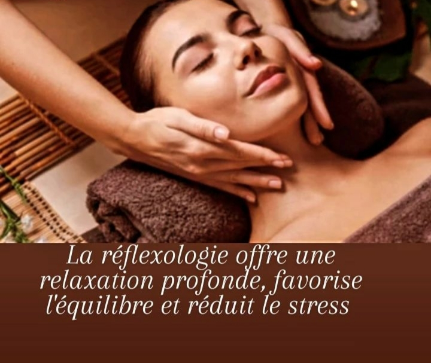

Réflexologie
Réflexologie Plantaire et Faciale :
La réflexologie permet de diminuer les tensions liées au stress et d’abaisser le niveau d’anxiété.
Il s’agit d’une technique manuelle qui procure une détente profonde et une sensation de relaxation.
Permettant de développer les capacités d’autoguérison et de rééquilibrage du corps, elle draine les toxines hors de l’organisme et soulage certaines douleurs musculaires.
Les doigts exercent des pressions soutenues sur les zones et points réflexes du corps correspondant à des organes ou des fonctions organiques.
Au cabinet, cette technique de massage traditionnelle se pratique sur le visage ou les pieds.
